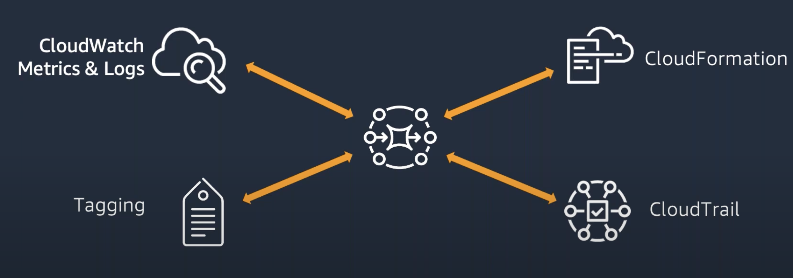
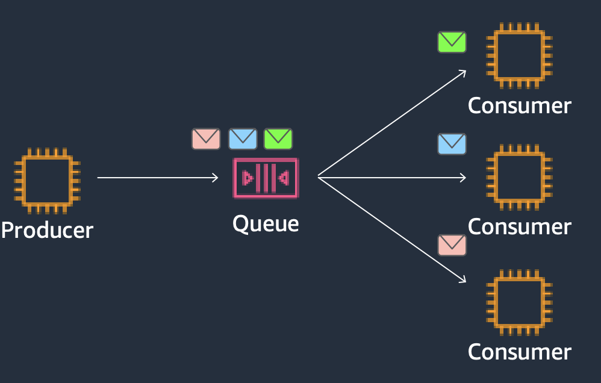
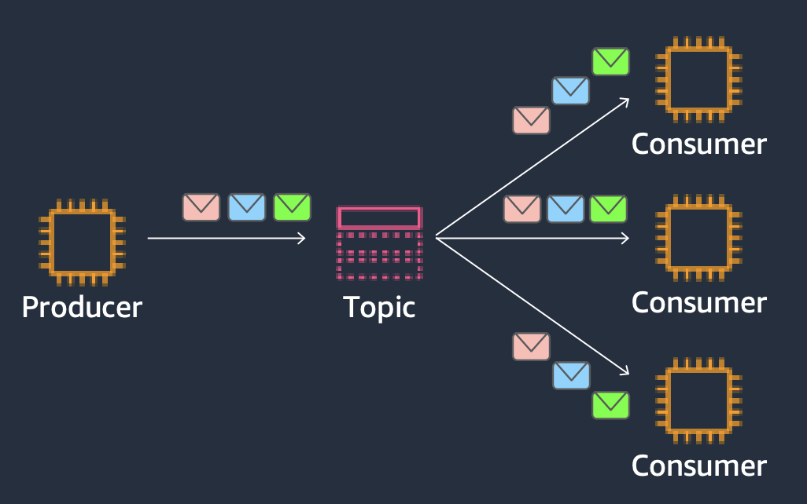
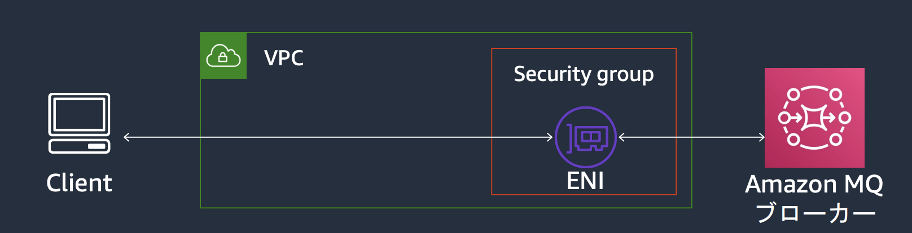
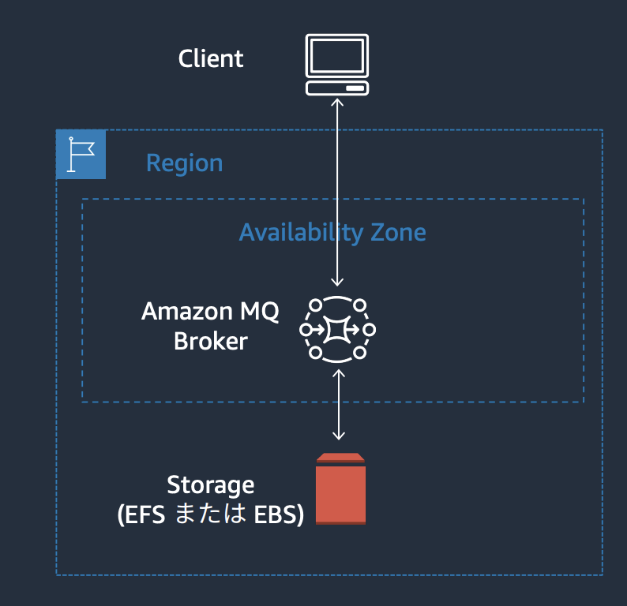
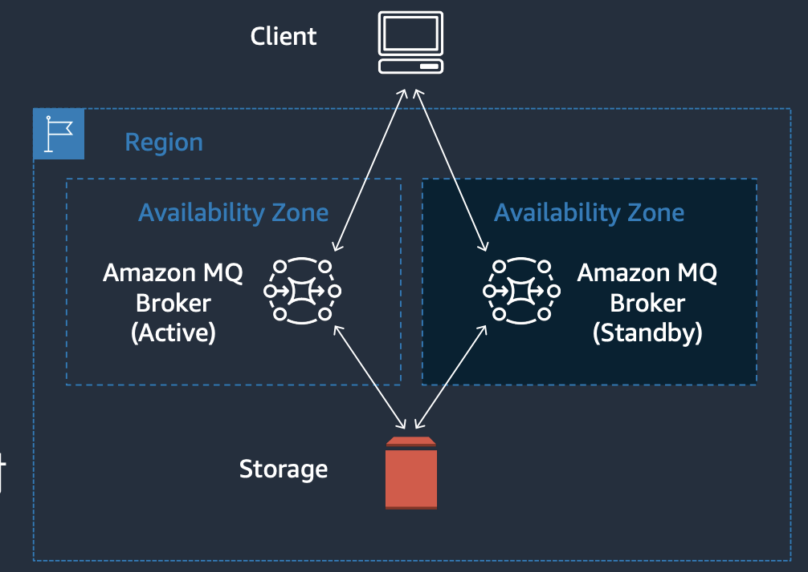
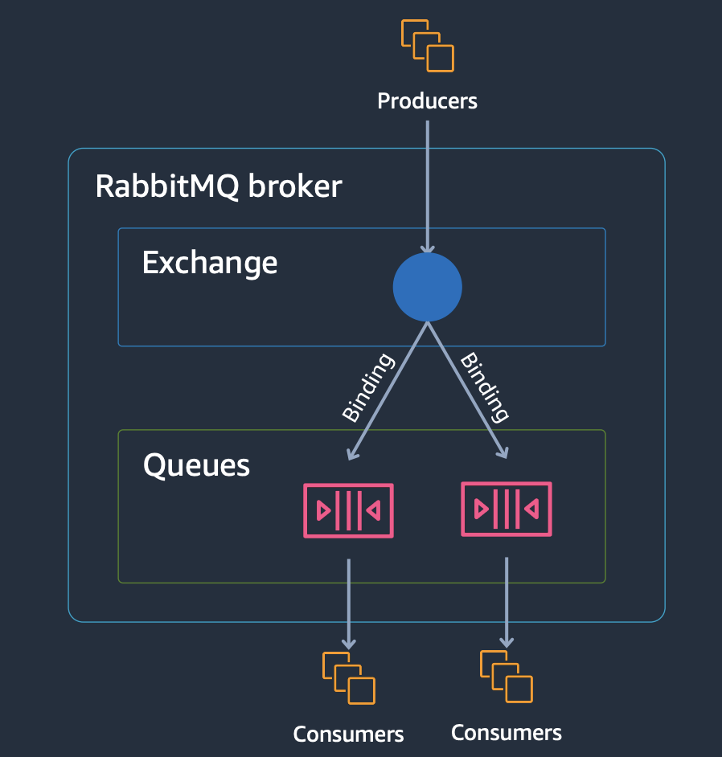
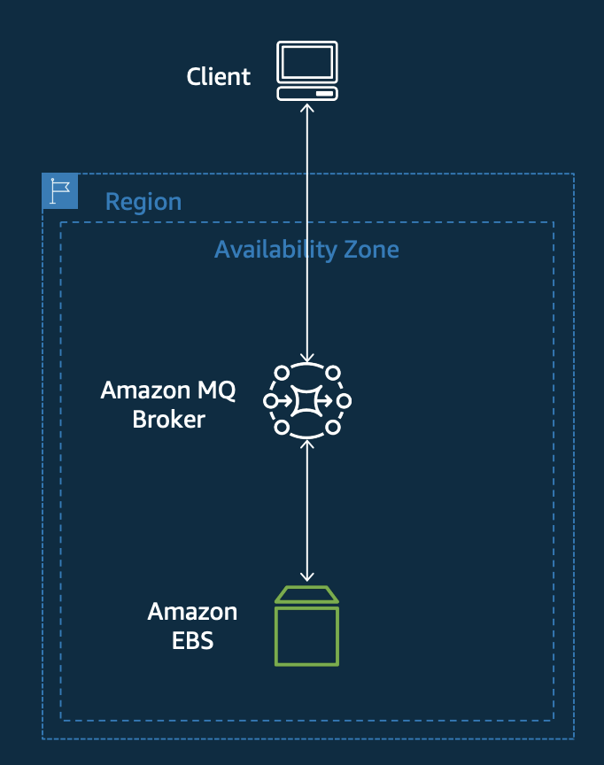
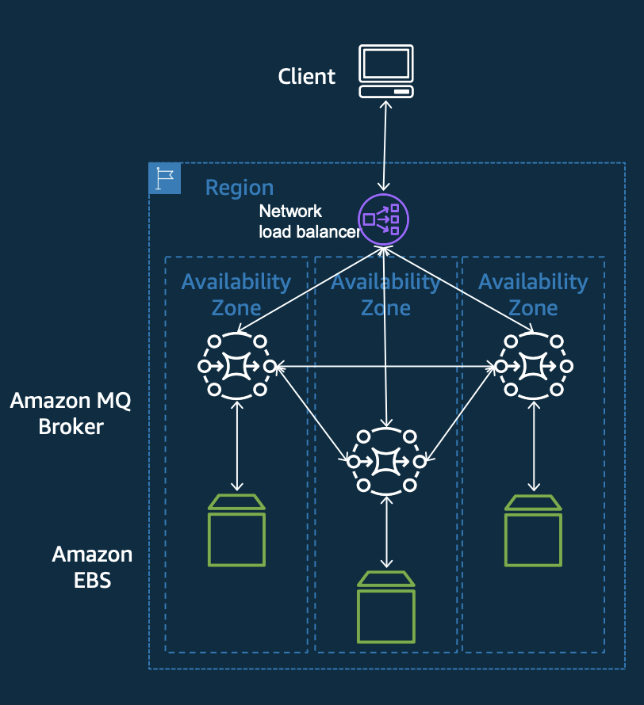
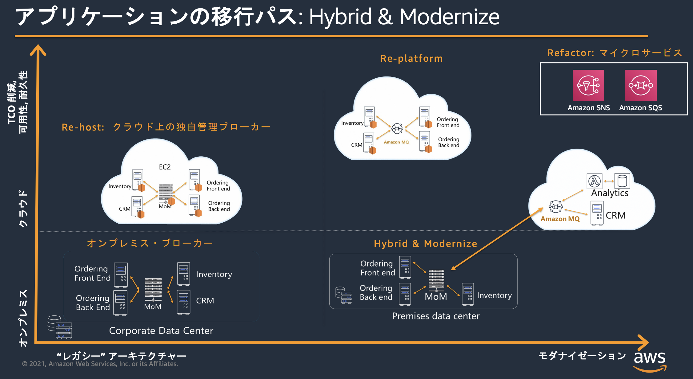

15. Amazon MQ¶
オープンソースメッセージブローカー向け完全マネージドサービス
エンタープライズで既に実績のある2つのエンジンタイプに対応している
Amazon MQ for ActiveMQ(Apache)
Amazon MQ for RabbitMQ
上記のように実績のあるエンジンに対応しているようにAmazon MQは現行のアプリケーションで利用しているメッセージングアプリケーションの移行に強みがある。
さらに、AWSのマネージドサービスであるため、サーバーのプロビジョニングやセキュリティ、高耐久性、障害復旧などが自動化されているという運用負荷低減というクラウドの恩恵を享受することができる。
15.1. 運用監視¶
AWSの様々なアプリケーションと連携しており、運用監視を支援している点でもクラウドの恩恵を享受できる。

15.2. Amazon MQ for ActiveMQ¶
15.2.1. Apache ActiveMQとは¶
多様な連携パターンをサポートするオープンソースのメッセージブローカー
様々なメッセージプロトコルに対応
AMQP(Advanced Message Queuing Protocol)
MQTT(Message Queueing Telemetry Transport)
IoT向けの軽量なメッセージングOpenWire
STOMP
Web Socket用
様々なプログラミング言語に対応
Java
Python
C
Ruby etc..
15.2.2. 構成要素¶
Pointo2Pointo用のキュー

Pub/Sub用のTopic

15.2.3. ブローカー¶
キューやトピックをホストするブローカーはインスタンスタイプや構成方法を適用できる。
ブローカーに対する接続については、インターネットからアクセスできるパブリック構成やセキュリティグループによるアクセス制御の設定が可能

ブローカーの構成要素としてはテスト用の単一ブローカーと障害体制のあるアクティブ/スタンバイブローカーが設定可能
単一ブローカー
SLAなどは対応していないのでテスト環境用

アクティブ/スタンバイブローカー
2つのエンドポイントが払い出され、クライアント側でフェイルオーバートランスポートを設定しておくと、障害が発生すると切り替わる

15.3. Amazon MQ for RabbitMQ¶
15.3.1. RabbitMQとは¶
企業の規模を問わず支持を集めている軽量なメッセージブローカー
プロトコルはAMQPに準拠し、複数のプログラミング言語から利用可能
Java
Python
.Net
Ruby etc..
特徴としてプラグインに対応しているが、Amazon MQ Rabbitでは事前にインストールしているプラグインのみが利用でき、追加のプラグインは利用できない
15.3.2. 構成要素¶
メッセージングのために3つの要素が存在する
Exchanges
メッセージを最初に受付け、Queueにルーティングする
ルーティング方法もDirect/Topic/Fanoutなどが可能Bindings
メッセージをQueueにルーティングする際に利用されるQueues
メッセージを保持する

15.3.3. ブローカー¶
ブローカーの構成方法は単一とクラスターが可能
単一ブローカー
SLAが定義されないので、テスト環境用
環境は顧客のVPCではなく、MQ用のVPC内に構築され、パブリックの場合はIGW、プライベートの場合はVPCエンドポイントを経由してアクセスされる

クラスターブローカー
3つのAZに配置してくれる。ネットワークロードバランサーが各ノードに分散をしてくれるので、エンドポイントとしては１つに見える。

15.4. オンプレからの移行¶
最終的な目標は完全マネージドでクラウドネイティブなSNSやSQSに移行すること。
ただ、アプリケーションのリファクタリングなどかなりコストを要するので、段階的にHWをEC2にしてクラウド上に移行するRe-hostや、AmazonMQを利用してブローカーをマネージドにするRe-platformなどを行うユーザーも多い。
最近はオンプレで既存のキューイングを利用しつつも、AmazonMQにレプリケーションをして、分析や新規機能をクラウド上で実施するという考え方もある。
